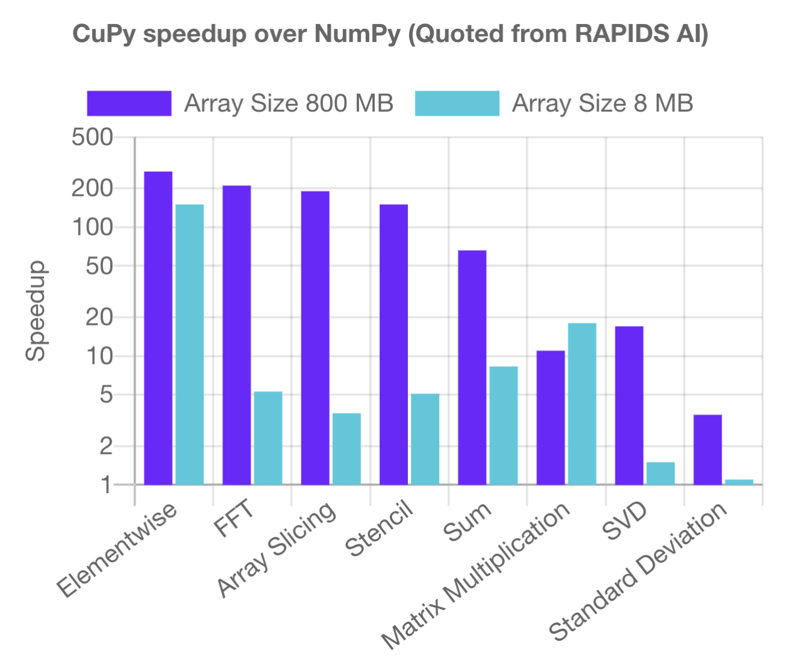

Installing CuPy
Overview
This guide teaches you how to build CuPy from source into a custom virtual environment.
In this guide, you will:
Learn how to install CuPy
Learn the basics of CuPy
Compare speeds to NumPy
OLCF Systems this guide applies to:
Summit
Frontier
Andes
Guide last tested with:
|
|
|---|---|
3.10.13 |
13.0.0*, 12.3.0 |
* Version 13.0.0 does not work on Frontier properly
Note
Working installations are not limited to what is shown above. Versions listed in the above table are what was tested most recently.
CuPy
GPU computing has become a big part of the data science landscape, as array operations with NVIDIA GPUs can provide considerable speedups over CPU computing. Although GPU computing on Summit is often utilized in codes that are written in Fortran and C, GPU-related Python packages are quickly becoming popular in the data science community. One of these packages is CuPy, a NumPy/SciPy-compatible array library accelerated with NVIDIA CUDA.
CuPy is a library that implements NumPy arrays on NVIDIA GPUs by utilizing CUDA Toolkit libraries like cuBLAS, cuRAND, cuSOLVER, cuSPARSE, cuFFT, cuDNN and NCCL. Although optimized NumPy is a significant step up from Python in terms of speed, performance is still limited by the CPU (especially at larger data sizes) – this is where CuPy comes in. Because CuPy’s interface is nearly a mirror of NumPy, it acts as a replacement to run existing NumPy/SciPy code on NVIDIA CUDA platforms, which helps speed up calculations further. CuPy supports most of the array operations that NumPy provides, including array indexing, math, and transformations. Most operations provide an immediate speed-up out of the box, and some operations are sped up by over a factor of 100 (see CuPy benchmark timings below, from the Single-GPU CuPy Speedups article).
{kind=link}
Compute nodes equipped with NVIDIA GPUs will be able to take full advantage of CuPy’s capabilities on the system, providing significant speedups over NumPy-written code. CuPy with AMD GPUs is still being explored, and the same performance is not guaranteed (especially with larger data sizes). Instructions for Frontier are available in this guide, but users must note that the CuPy developers have labeled this method as experimental and has limitations.
Installing CuPy
Warning
Before setting up your environment, you must exit and log back in so that you have a fresh login shell.
This is to ensure that no previously activated environments exist in your $PATH environment variable.
Additionally, you should execute module reset.
Building CuPy from source is highly sensitive to the current environment variables set in your profile. Because of this, it is extremely important that all the modules and environments you plan to load are done in the correct order, so that all the environment variables are set correctly.
First, load the gnu compiler module (most Python packages assume GCC), relevant GPU module (necessary for CuPy), and the python module (allows you to create a new environment):
$ module load gcc/9.3.0-compiler_only # might work with other GCC versions
$ module load cuda/11.7.1
$ module load miniforge3/24.3.0-0
$ module load PrgEnv-gnu/8.5.0
$ module load rocm/5.7.1 # may work with other ROCm versions
$ module load craype-accel-amd-gfx90a
$ module load miniforge3/23.11.0-0
$ module load gcc/9.3.0 # works with older GCC versions if using cuda/10.2.89
$ module load cuda/11.2.2
$ module load miniforge3/23.11.0-0
Loading a python module puts you in a “base” environment, but you need to create a new environment using the conda create command:
$ conda create -n cupy-summit python=3.10 numpy=1.26.4 scipy
$ conda create -n cupy-frontier python=3.10 numpy=1.26.4 scipy
$ conda create -n cupy-andes python=3.10 numpy=1.26.4 scipy
After following the prompts for creating your new environment, you can now activate it:
$ source activate cupy-summit
$ source activate cupy-frontier
$ source activate cupy-andes
Finally, install CuPy from source into your environment.
To make sure that you are building from source, and not a pre-compiled binary, use pip:
Warning
CuPy v13.0.0 removed support for CUDA 10.2, 11.0, and 11.1. Please try installing CuPy<13.0.0 if you run into issues with older CUDA versions. See CuPy Release Notes for more details and other compatibility changes.
$ CC=gcc NVCC=nvcc pip install --no-cache-dir --no-binary=cupy cupy==13.0.0
$ export CUPY_INSTALL_USE_HIP=1
$ export ROCM_HOME=/opt/rocm-5.3.0
$ export HCC_AMDGPU_TARGET=gfx90a
$ CC=gcc CXX=g++ pip install --no-cache-dir --no-binary=cupy cupy==12.3.0
$ salloc -A PROJECT_ID -N1 -p gpu -t 01:00:00
$ export all_proxy=socks://proxy.ccs.ornl.gov:3128/
$ export ftp_proxy=ftp://proxy.ccs.ornl.gov:3128/
$ export http_proxy=http://proxy.ccs.ornl.gov:3128/
$ export https_proxy=http://proxy.ccs.ornl.gov:3128/
$ export no_proxy='localhost,127.0.0.0/8,*.ccs.ornl.gov'
$ CC=gcc NVCC=nvcc pip install --no-cache-dir --no-binary=cupy cupy==13.0.0
Note
To be able to build CuPy on Andes, you must be within a compute job on the GPU partition (even if you have the cuda module loaded). This allows CuPy to see the GPU properly when linking and building.
The CC and NVCC flags ensure that you are passing the correct wrappers, while the various flags for Frontier tell CuPy to build for AMD GPUs.
Note that, on Summit, if you are using the instructions for installing CuPy with OpenCE below, a cuda module will automatically be loaded.
This installation takes, on average, 10-20 minutes to complete (due to building everything from scratch), so don’t panic if it looks like the install timed-out.
Eventually you should see output similar to this (versions will vary):
Successfully installed cupy-13.0.0 fastrlock-0.8.2
Installing CuPy in an OpenCE Environment (Summit only)
If you wish to use CuPy within a clone of the OpenCE environment, the installation process is very similar to what we do in the regular CuPy installation we saw above.
Warning
The open-ce/1.2.0-pyXY-0 (which is the current default) will not support this. So make sure you are using open-ce/1.5.0-pyXY-0 or higher.
The contents of the open-ce module cannot be modified so you need to make your own clone of the open-ce environment.
$ module purge
$ module load DefApps
$ module unload xl
$ module load open-ce/1.10.0-py39-ibm
$ conda create --clone /sw/summit/ibmsw/minicondas/rocketce-1.10-py3.9-pytorch -p /ccs/proj/<project_id>/<user_id>/envs/summit/opence_cupy_summit
$ conda activate /ccs/proj/<project_id>/<user_id>/envs/summit/opence_cupy_summit
Next, install CuPy the way you did before. This installation will use the system GCC /usr/bin/gcc which is currently 8.5.0.
$ CC=gcc NVCC=nvcc pip install --no-cache-dir --no-binary=cupy cupy==13.0.0
Now, everytime you want to use this environment with CuPy on a new login or in a job, you will have to do the sequence of the following
module purge
module load DefApps
module unload xl
module load open-ce/1.10.0-py39-ibm
conda activate /ccs/proj/<project_id>/<user_id>/envs/summit/opence_cupy_summit
Getting Started With CuPy
Note
Assuming you are continuing from the previous sections, you do not need to load any modules. Otherwise, you need to load the modules associated with your system covered in the Installing CuPy section.
When a kernel call is required in CuPy, it compiles a kernel code optimized for the shapes and data types of given arguments, sends it to the GPU device, and executes the kernel.
Due to this, CuPy runs slower on its initial execution.
This slowdown will be resolved at the second execution because CuPy caches the kernel code sent to GPU device.
By default, the compiled code is cached to the $HOME/.cupy/kernel_cache directory, which the compute nodes will not be able to access.
It is good practice to change it to your scratch directory:
$ export CUPY_CACHE_DIR="${MEMBERWORK}/<YOUR_PROJECT_ID>/.cupy/kernel_cache"
Before you start testing CuPy with Python scripts, let’s go over some of the basics.
The developers provide a great introduction to using CuPy in their user guide under the CuPy Basics section.
We will be following this walkthrough on Summit.
The syntax below assumes being in a Python shell with access to 4 GPUs (through a jsrun -g4 ... command).
Note
On Frontier, running in an interactive job will return 8 GPUs available to CuPy.
As is the standard with NumPy being imported as “np”, CuPy is often imported in a similar fashion:
>>> import numpy as np
>>> import cupy as cp
Similar to NumPy arrays, CuPy arrays can be declared with the cupy.ndarray class.
NumPy arrays will be created on the CPU (the “host”), while CuPy arrays will be created on the GPU (the “device”):
>>> x_cpu = np.array([1,2,3])
>>> x_gpu = cp.array([1,2,3])
Manipulating a CuPy array can also be done in the same way as manipulating NumPy arrays:
>>> x_cpu*2.
array([2., 4., 6.])
>>> x_gpu*2.
array([2., 4., 6.])
>>> l2_cpu = np.linalg.norm(x_cpu)
>>> l2_gpu = cp.linalg.norm(x_gpu)
>>> print(l2_cpu,l2_gpu)
3.7416573867739413 3.7416573867739413
Useful functions for initializing arrays like np.linspace, np.arange, and np.zeros also have a CuPy equivalent:
>>> cp.zeros(3)
array([0., 0., 0.])
>>> cp.linspace(0,10,11)
array([ 0., 1., 2., 3., 4., 5., 6., 7., 8., 9., 10.])
>>> cp.arange(0,11,1)
array([ 0, 1, 2, 3, 4, 5, 6, 7, 8, 9, 10])
CuPy has a concept of a “current device”, which is the current activated GPU device that will operate on an array or where future arrays will be allocated.
Most of the time, if not explicitly declared or switched, the initial default device will be GPU 0.
To find out what device a CuPy array is allocated on, you can call the cupy.ndarray.device attribute:
>>> x_gpu.device
<CUDA Device 0>
To get a total number of devices that you can access, use the getDeviceCount function:
>>> cp.cuda.runtime.getDeviceCount()
4
The current device can be switched using cupy.cuda.Device(<DEVICE_ID>).use():
>>> cp.cuda.Device(1).use()
>>> x_gpu_1 = cp.array([1, 2, 3, 4, 5])
>>> x_gpu_1.device
<CUDA Device 1>
Similarly, you can temporarily switch to a device using the with context:
>>> cp.cuda.Device(0).use()
>>> with cp.cuda.Device(3):
... x_gpu_3 = cp.array([1, 2, 3, 4, 5])
...
>>> x_gpu_0 = cp.array([1, 2, 3, 4, 5])
>>> x_gpu_0.device
<CUDA Device 0>
>>> x_gpu_3.device
<CUDA Device 3>
Trying to perform operations on an array stored on a different GPU will result in an error:
Warning
The below code block should not be run on Frontier, as it causes problems for the subsequent code blocks further below. With recent updates to CuPy, peer access is enabled by default, which “passes” the below error. This causes problems with AMD GPUs, resulting in inaccurate data.
>>> with cp.cuda.Device(0):
... x_gpu_0 = cp.array([1, 2, 3, 4, 5]) # create an array in GPU 0
...
>>> with cp.cuda.Device(1):
... x_gpu_0 * 2 # ERROR: trying to use x_gpu_0 on GPU 1
...
PerformanceWarning: The device where the array resides (0) is different from the current device (1). Peer access has been activated automatically.
To solve the above warning/error, you must transfer x_gpu_0 to “Device 1”.
A CuPy array can be transferred to a specific GPU using the cupy.asarray() function while on the specific device:
>>> with cp.cuda.Device(1):
... cp.asarray(x_gpu_0) * 2 # fixes the error, moves x_gpu_0 to GPU 1
...
array([ 2, 4, 6, 8, 10])
A NumPy array on the CPU can also be transferred to a GPU using the same cupy.asarray() function:
>>> x_cpu = np.array([1, 1, 1]) # create an array on the CPU
>>> x_gpu = cp.asarray(x_cpu) # move the CPU array to the current device
>>> x_gpu
array([1, 1, 1])
To transfer from a GPU back to the CPU, you use the cupy.asnumpy() function instead:
>>> x_gpu = cp.zeros(3) # create an array on the current device
>>> x_cpu = cp.asnumpy(x_gpu) # move the GPU array to the CPU
>>> x_cpu
array([ 0., 0., 0.])
Associated with the concept of current devices are current “streams”. In CuPy, all CUDA operations are enqueued onto the current stream, and the queued tasks on the same stream will be executed in serial (but asynchronously with respect to the CPU). This can result in some GPU operations finishing before some CPU operations. As CuPy streams are out of the scope of this guide, you can find additional information in the CuPy User Guide.
NumPy Speed Comparison (Summit only)
Warning
As noted in AMD+CuPy limitations, data sizes explored here hang. So, this section currently does not apply to Frontier.
Now that you know how to use CuPy, time to see the actual benefits that CuPy provides for large datasets. More specifically, let’s see how much faster CuPy can be than NumPy on Summit. You won’t need to fix any errors; this is mainly a demonstration on what CuPy is capable of.
There are a few things to consider when running on GPUs, which also apply to using CuPy:
Higher precision means higher cost (time and space)
The structuring of your data is important
The larger the data, the better for GPUs (but needs careful planning)
These points are explored in the example script timings.py:
# timings.py
import cupy as cp
import numpy as np
import time as tp
A = np.random.rand(3000,3000) # NumPy rand
G = cp.random.rand(3000,3000) # CuPy rand
G32 = cp.random.rand(3000,3000,dtype=cp.float32) # Create float32 matrix instead of float64 (default)
G32_9k = cp.random.rand(9000,1000,dtype=cp.float32) # Create float32 matrix of a different shape
t1 = tp.time()
np.linalg.svd(A) # NumPy Singular Value Decomposition
t2 = tp.time()
print("CPU time: ", t2-t1)
t3 = tp.time()
cp.linalg.svd(G) # CuPy Singular Value Decomposition
cp.cuda.Stream.null.synchronize() # Waits for GPU to finish
t4 = tp.time()
print("GPU time: ", t4-t3)
t5 = tp.time()
cp.linalg.svd(G32)
cp.cuda.Stream.null.synchronize()
t6 = tp.time()
print("GPU float32 time: ", t6-t5)
t7 = tp.time()
cp.linalg.svd(G32_9k)
cp.cuda.Stream.null.synchronize()
t8 = tp.time()
print("GPU float32 restructured time: ", t8-t7)
This script times the decomposition of a matrix with 9 million elements across four different methods.
First, NumPy is timed for a 3000x3000 dimension matrix.
Then, a 3000x3000 matrix in CuPy is timed.
As you will see shortly, the use of CuPy will result in a major performance boost when compared to NumPy, even though the matrices are structured the same way.
This is improved upon further by switching the data type to float32 from float64 (the default).
Lastly, a 9000x1000 matrix is timed, which contains the same number of elements as the original matrix, just rearranged.
Although you may not expect it, the restructuring results in a big performance boost as well.
Before asking for a compute node, change into your scratch directory:
$ cd $MEMBERWORK/<YOUR_PROJECT_ID>
$ mkdir cupy_test
$ cd cupy_test
Let’s see the boosts explicitly by running the timings.py script.
To do so, you must submit submit_timings to the queue:
$ bsub -L $SHELL submit_timings.lsf
Example “submit_timings” batch script:
#!/bin/bash
#BSUB -P <PROJECT_ID>
#BSUB -W 00:05
#BSUB -nnodes 1
#BSUB -J cupy_timings
#BSUB -o cupy_timings.%J.out
#BSUB -e cupy_timings.%J.err
cd $LSB_OUTDIR
date
module load gcc/9.3.0-compiler_only
module load cuda/11.7.1
module load miniforge3/24.3.0-0
source activate cupy-summit
export CUPY_CACHE_DIR="${MEMBERWORK}/<project_id>/.cupy/kernel_cache"
jsrun -n1 -g1 python3 timings.py
After the job completes, in cupy_timings.<JOB_ID>.out you will see something similar to:
CPU time: 21.632022380828857
GPU time: 11.382664203643799
GPU float32 time: 4.066986799240112
GPU float32 restructured time: 0.8666532039642334
The exact numbers may be slightly different, but you should see a speedup factor of approximately 2 or better when comparing “GPU time” to “CPU time”.
Switching to float32 was easier on memory for the GPU, which improved the time further.
Things are even better when you look at “GPU float32 restructured time”, which represents an additional factor of 4 speedup when compared to “GPU float32 time”.
Overall, using CuPy and restructuring the data led to a speedup factor of >20 when compared to traditional NumPy!
This factor would diminish with smaller datasets, but represents what CuPy is capable of at this scale.
You have now discovered what CuPy can provide! Now you can try speeding up your own codes by swapping CuPy and NumPy where you can.